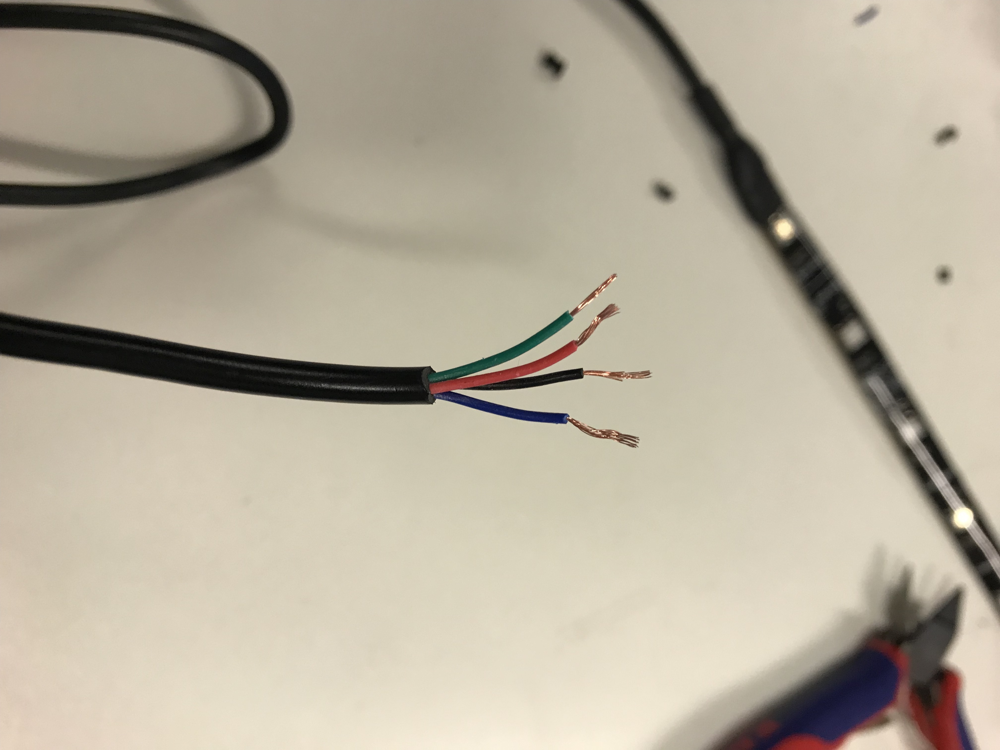
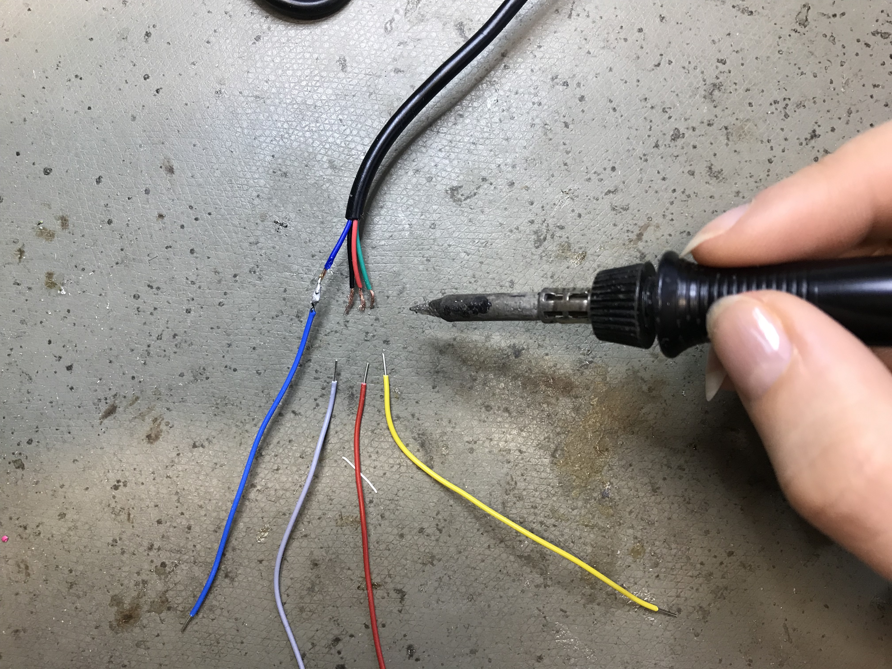
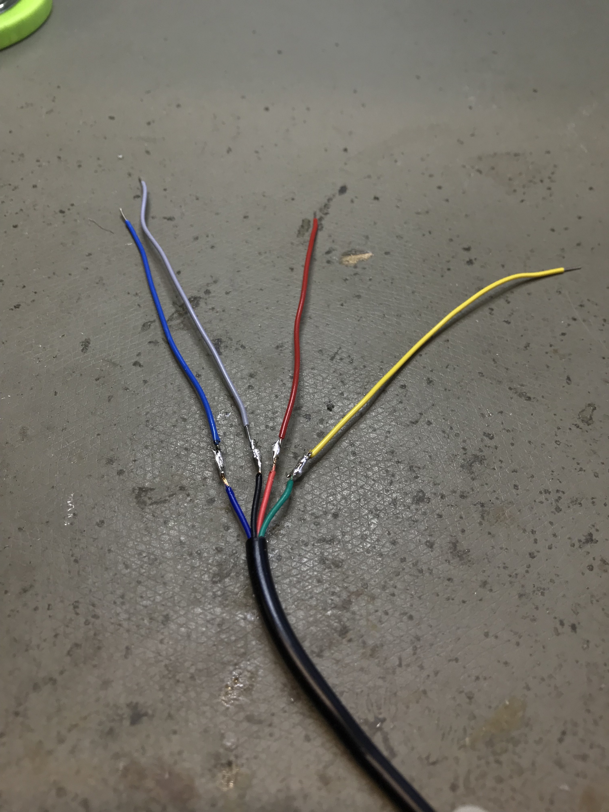

Week 9
FINAL PROJECT
Creating and inventing our own product
In the next few weeks, we will apply our knowledge and develop our own product. At least three of the learned techniques should be used. No product should be developed, but something that is needed by humans. Something with meaning and benefit. Not just any product should be developed, but something that is needed by humans. Something with meaning and benefit.
Idea Development + Research
At first I had three very different ideas. But all ideas should help to support people in everyday life.
In the next step I had to decide which idea to go with. After some research, I finally decided to develop a supportive Jack for cyclists.
Of course, the end product can also be used by joggers, scooter riders or the like.
Prototyping
Unfortunately, not everything went right from the beginning with the prototype.
Since the light strip, which I had bought, is waterproof and thus coated, it was much more difficult to work with. I could not solder the cables directly to the hose, so that I had to cut the cable. And then it was time to find out what the different cables actually are. It turned out that the cables (red, green, blue) only reflect the RGB colors. The last black cable was then logically for the power.
Everything found out, it goes already further with the programming. However, the cables were much too short for that. So I decided to extend it to make it easier to work. So I soldered it.
 Well, when I arrived at the programming, I connected all the cables to their designated places. With an example code given by Arduino, I made the light strip glow. Here I was right before the next problem. Because in my final product, the light stripe should show a dynamic flashing. Say each individual LED must be addressed one after the other, so that a smooth transition can occur. But in my case, all the LEDs were addressed simultaneously.
So I had to rethink and find another new way.
The new idea was to work with optical fibers. These should be illuminated by a light source on one side and then guide this light to the other end.
First of all, the whole thing will be tested with normal LEDs. We programmed these so that they had a fading effect.In order for this to work, a resistor has been added to limit the current.
To connect the optical fibers to the LEDs, I take the LED and grind it up with sand paper to a smooth surface. Then I carefully drill a small hole in the LED so that the optical fiber fits perfectly into it.


When I plugged the optical fibers into the LED, I had to prove that the LED is a far too weak light source. The light is barely not guided and is therefore useless for me.

In the next step, I tried another LED, which has a slightly higher voltage. This led the light much better through my optical fibers, but still too small for me.
So I continued to try different things and found out that the LED, which is in the initially intended light strip, seems to be the best light source.I tested it all with a ring from NeoPixel, because this ring has no waterproof coating. Unlike the initially used light strip I thought that this coating could possibly dim the light a bit.
These NeoPixels are very small, so I had to think carefully about the circuit. At first I tried embroidering it all. For this I created a circuit in Illustrator. For the circuit, I took an extra piece of fabric, as I did not want to risk breaking the whole sleeve. This time, the fabric was placed down so that the circuit appears on the right side. And then let it embroider.

Here I had to realize again that this will not be possible, because the circuit is so small, the whole lines are too close together and it is almost impossible to separate them.

So I decided to sew the circuit by hand. This initially turned out to be a very good idea. No path is touching now and the circuit is working.


In the next step I wanted to solder the NeoPixel to my circuit. The connections of the NeoPixel itself are very small, which is why you had to work very minimalistically. You also had to be very careful that you do not destroy the fabric with the high heat.

This again was not the right way and did not work as I had imagined. So at first I tried not to make any loops on the NeoPixels, which I can finally sew into the right place in the circuit. But since the neoPixel connections are so small, they broke off quickly due to the high heat, so loops were not an option for me either.


So I'm trying this again in a different way. Instead of fabric, I have now taken hard white plastic. On this plastic, I rebuilt the circuit with copper tape and soldered in the next step, the NeoPixel on it. You also have to be very careful, because the high heat can quickly melt the plastic and so the whole circuit can be destroyed quickly.


This worked great with the first LED. But as soon as the second LED was soldered, nothing worked. Even after a long search, I could not figure out where the mistake lay.

So it said again: plan change
From the small NeoPixel I switched to something bigger, which can be connected much easier, since with these no curves are necessary, but only straight lines. The connections with these NeoPixels are much easier. In the end you only need three cables for all four. All connected first, the connections were tested with the multimeter to directly rule out that anything went wrong.

After the connections have already been tested with the multimeter, I connected the LEDs to the Arduino to see if they really light up. And finally, your first real success was visible, because all NeoPixel light up.

In the next step, the sensor could now be built.
I decided for a bend sensor, which should bring the NeoPixel only in the stretched state to light up. I easily built the sensor myself. All you need is two pieces of plastic sticking to one side, black tape and two strips of copper tape. The first piece of plastic is placed with the adhesive side up and then, in turn, with the adhesive side up, the copper tape positioned. Next is a piece of the black tapes, with which the copper tape should be completely covered. Then the second piece of copper tape comes on it, but this time with the adhesive side down. And last but not least, the second piece of plastic comes on it, but also with the adhesive side down.
It is important that on each side of a small piece of copper tape from the plastic looks out, so that you can connect in the end with the rest.
Then everything is connected again by alligator clips and connected to the Arduino to test whether it works.In order for it to do that, of course, the sensor must first be included in the code in advance.
To find out when the sensor does something, take the serial monitor again. It shows you which values you have to specify in your code. The serial monitor can be found in the upper right corner of your Arduino software.

In the next step I had to think about how I would connect everything up the sleeve and finally used a solderable breadboard. On this I have the possibility to easily connect and solder everything with each other. But before it went to solder, I had to cut the board first in as small pieces as possible.


Next I extended the cable of the battery, because I wanted to hide it in an inside pocket in the jacket and the current cables were clearly too short. When extending the cables, however, you had to be very careful, as you could easily have caused a short circuit and destroyed the battery.

At the end all connections were tested again and I checked, if I could achieve the hoped-for result.
All that's missing now is that the optical fibers and the NeoPixels are connected to each other. For this I tried different glue, but superglue or the like did not dry. So I decided on a rather uglier version and glued everything together with the hot glue gun.

Since the glow of the optical fibers in the bright not so good to gelun, I test the whole again to darker conditions. Just in the circumstances in which it should be used later.
When all the technology finally worked, I thought about my sleeve.
For this I first created a pattern on paper, so as not to unnecessarily waste material, if in the end something did not fit or maybe even should look different. In the sleeve I integrated some loops, through which the optical fibers should run.

Satisfied with the template, I was finally able to cut the sleeve in the Laser Cutter. Not only did I cut the sleeve 2 times, but 4 times, so that I could hide the optical fibers and the electronics perfectly in between. Of course I could have cut the sleeves out by hand, but with the laser cutter I had the certainty that they will be 100% the same size and will fit perfectly together. I threaded the optical fibers directly to see what the whole thing would look like with fabric.

Finally, I sewed everything together and sewed my sleeves to an existing vest. In addition, I have on the inside of the vest two inside pockets in which the batteries can be hidden.